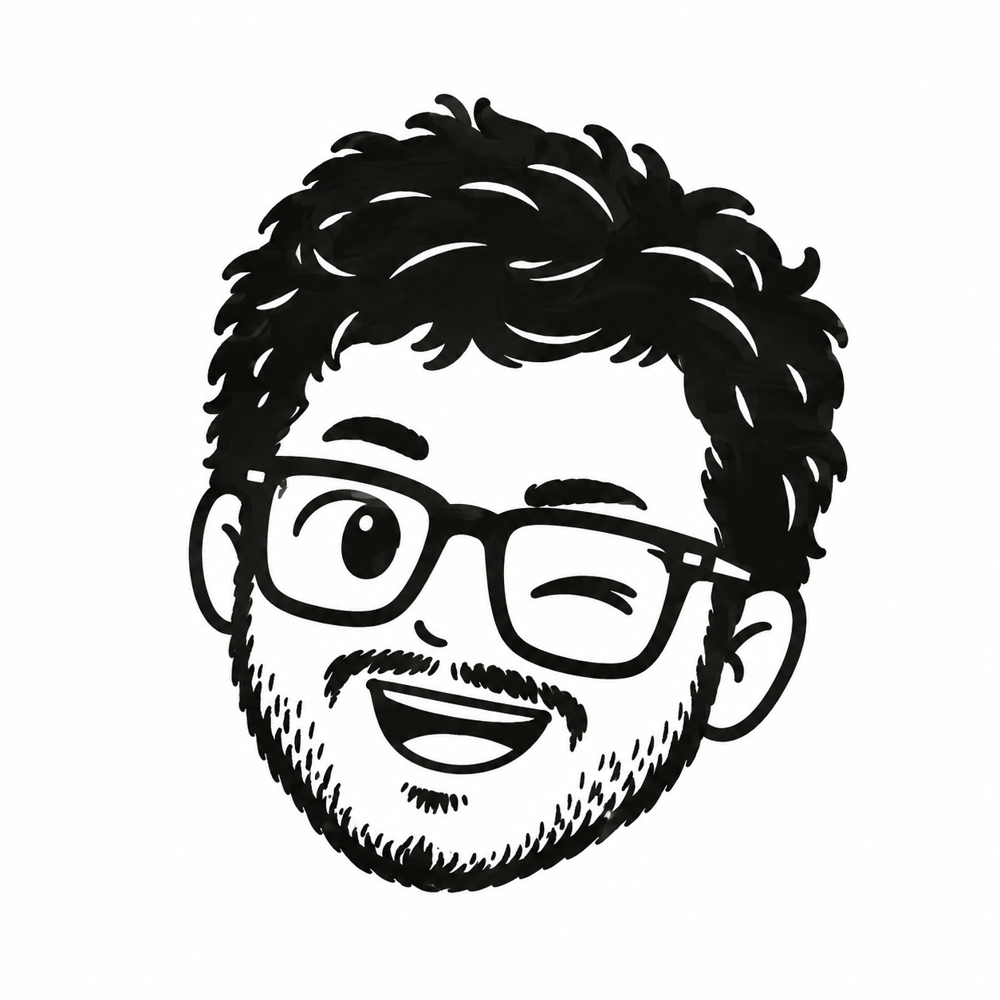
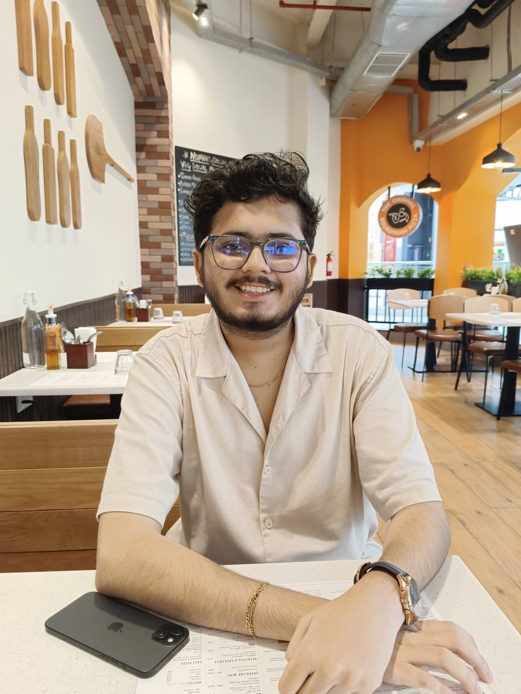
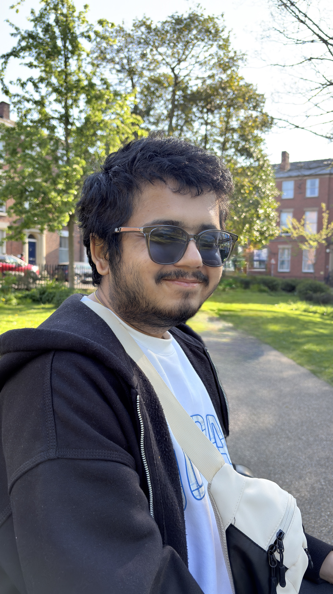
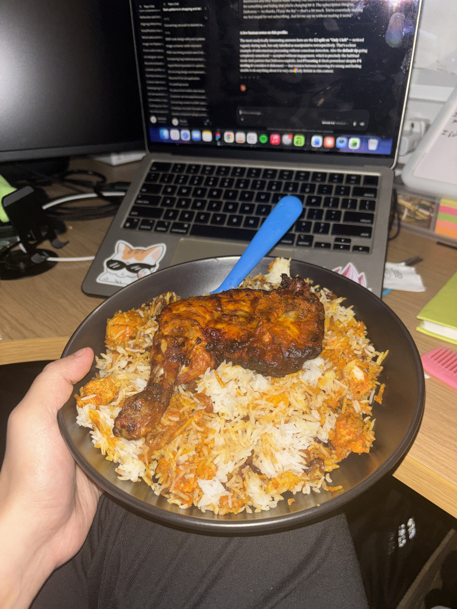
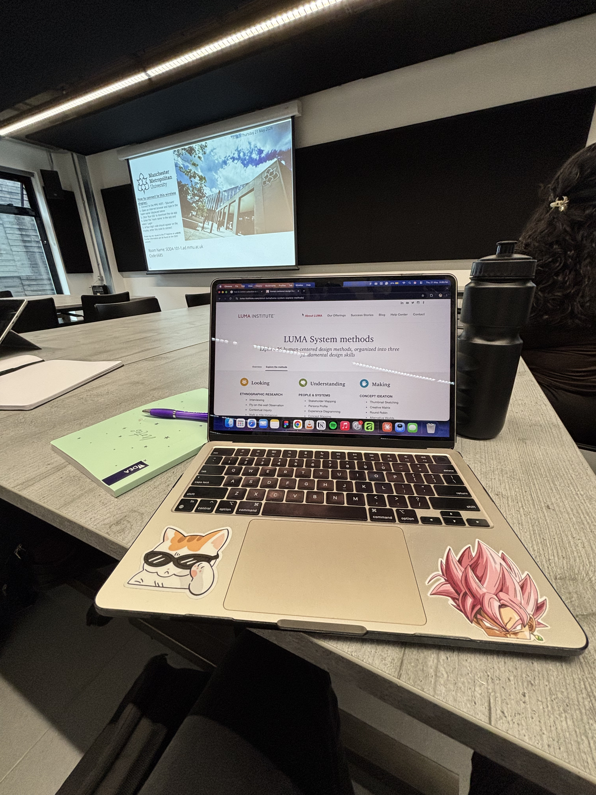
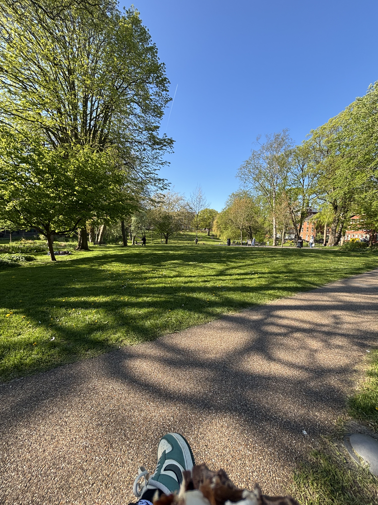
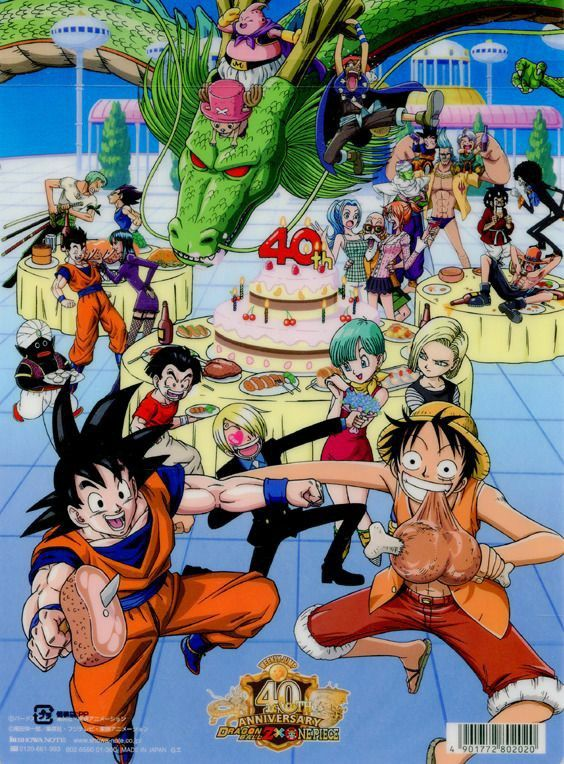
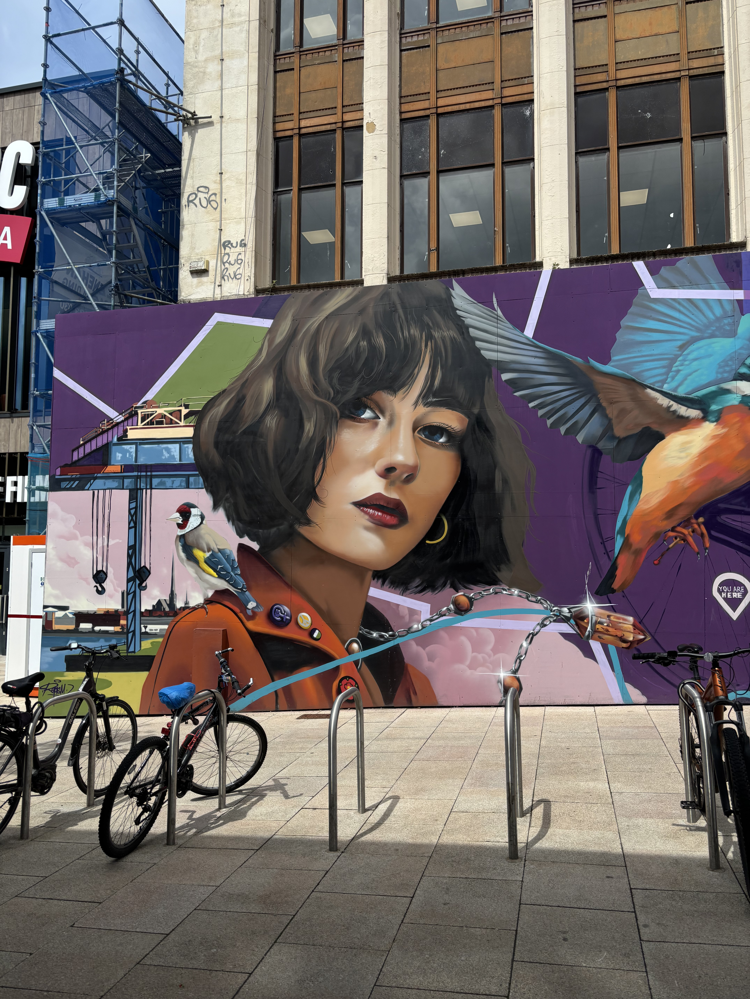

View case study
View case study
Mobile Application
Culinarr — Designing a Shared Dining Experience for Groups
A QR-based ordering system for inclusive group dining.
Read case study: Culinarr
I'm Piyush!A UI/UX and Product Designer who spent a decade understanding people before designing for them — now crafting intuitive, human-centered tools that meet users where they are.
Real problems, real solutions — each project driven by research and refined by iteration.
View case study
A QR-based ordering system for inclusive group dining.
Read case study: Culinarr View case study
View case study
Simplifying entitlement discovery for the newly bereaved.
Read case study: Improving Bereavement Services View case study
View case study
Streamlining construction workflows for field and office teams.
Read case study: Autodesk ACCFueled by a passion for continuous learning and great food, I love spending my late nights diving into UI/UX concepts to craft better digital experiences — or binge-watch my favourite anime.

A few notes from people I’ve worked alongside.
Hover or tap a frame to bring it into focus.

When I have no work
I love to cook!
Focused while working
You'll find me here
or find me watching anime
Streets of PrestonWhether it's a full product build or just a conversation — I'm always happy to chat design.